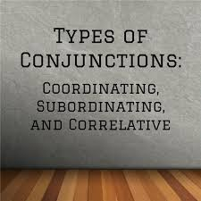

What is Conjunction?
Conjunction is a word that connects or joins clauses, words, phrases together in a sentence. Conjunctions are used to coordinate words in a sentence. “but”, “although”, “while” are some common conjunctions.

TYPES OF CONJUNCTIONS
- Coordinating conjunctions
- The job of a coordinating conjunction is to join two words, phrases, or independent clauses, which are parallel in structure. There are seven coordinating conjunctions which are by far the most common conjunctions: and, but, for, nor, or, so, yet. Examples:-
- We went to the stadium and
enjoyed the cricket match.
-
Go away
and
never come back.
- Correlative Conjunctions
- A correlative conjunction uses a set of words in a parallel sentence structure to show a contrast or to compare the equal parts of a sentence. The words of correlative conjunctions have a special connection between them.
The correlative conjunctions are not only - but also, either- or, neither - nor, both - and, not - but, whether - or. Examples:-
-
Nither
alex nor Robin can play baseball.
- I want
both
tea and.coffee.
- Subordinating Conjunctions:
- A subordinating conjunction joins elements of an unparallel sentence structure. These elements are usually a dependent clause and an independent clause.. Examples:-
- Before we left home, I had had my breakfast.
- provide they come, we can start class Tuesday.